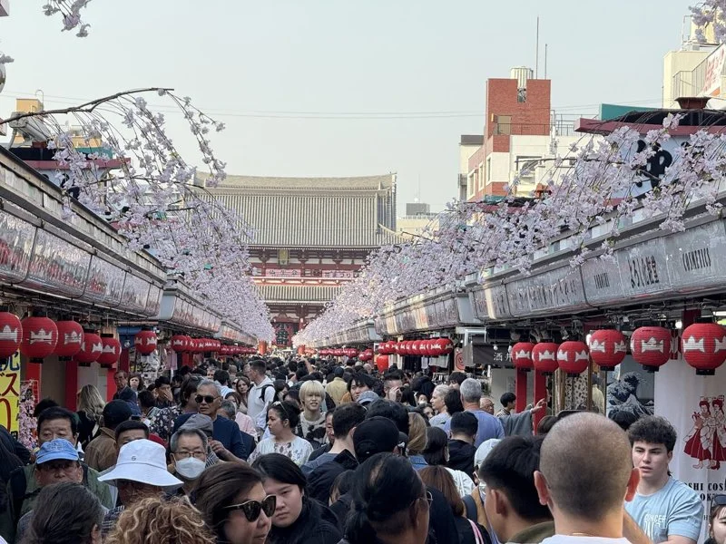

2026-03-19 08:23 聯合報／ 記者 吳昇紘／台北即時報導

今年2月訪日外國人346萬創下當月史上新高，中國旅客大減45%，台灣、南韓、美國等補
上來。聯合報系資料照片
受日本首相高市早苗「台灣有事」發言影響，中國發動旅遊自肅，去年
12月赴日 陸客數量腰斬，團客幾乎消失。2月農曆春節，不少台灣民眾
帶家人去 日本旅遊，但陸客仍很少。日旅達人 林氏璧在「日本自助旅
遊中毒者」臉書粉專表示，2026年2月訪日 外國人346萬創下當月史上
新高，中國旅客大減45%，台灣、南韓、美國等都補上來，台灣旅客增
加率贏過南韓。
林氏璧指出，根據日本政府觀光局（JNTO）3月18日公布的數據顯
示，2026年2月訪日人數達到346萬6700人，比去年同期增加近19萬人
（6.4%）。